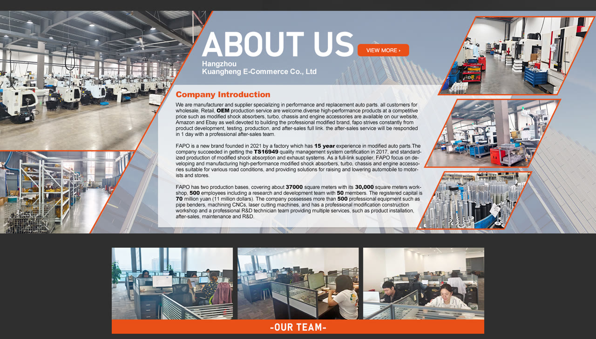

Rear 9-Way Monotube amortyzatory Do Jeep Wrangler JK 2007-2018 (4-6 in Lift) PA491950
Zawartość zestawu: 2× tylne amortyzatory jednorurowe FAPO P5 9-kierunkowe Cechy produktu: 9-kierunkowa regulacja odbicia w celu precyzyjnego dostrojenia do warunków jazdy, idealna do zastosowań ulicznych, szlakowych lub przy dużym obciążeniu Tłok aluminiowy 7075 obrabiany CNC o średnicy 57 mm zapewnia większą siłę tłumienia i lepsze odprowadzanie ciepła w porównaniu do standardowych amortyzatorów 2,5-calowa jednorur…
Package Includes: 2× FAPO P5 Rear 9-Way Monotube Shocks Features: 9-Way Rebound Adjustment for precise tuning to match driving conditions, ideal for street, trail, or heavy-load applications 57mm CNC-Machined 7075 Aluminum Piston delivers stronger damping force and superior heat dissipation compared to standard shocks 2.5 inch Monotube Nitrogen Gas Design offers increased oil capacity for consistent, fade-free performance on extended off-road runs Hardened 4130 Chromoly Steel Linkages resist bending and deliver unmatched strength under extreme off-road stress German Fuchs Shock Fluid and NOK High-Pressure Oil Seals ensure reliable sealing and long-term performance even at high temperatures up to 248°F Reinforced Steel Top Mounts and Aerospace-Grade 7075 Aluminum Lower Supports provide durable, vibration-resistant mounting under heavy loads Default 1-year warranty for any manufacturing defect, upgrade to 2 years with our Free Extended Warranty Program
2199,99 PLN
Opis produktu
Zawartość zestawu:
- 2× tylne amortyzatory jednorurowe FAPO P5 9-kierunkowe
Cechy produktu:
- 9-kierunkowa regulacja odbicia w celu precyzyjnego dostrojenia do warunków jazdy, idealna do zastosowań ulicznych, szlakowych lub przy dużym obciążeniu
- Tłok aluminiowy 7075 obrabiany CNC o średnicy 57 mm zapewnia większą siłę tłumienia i lepsze odprowadzanie ciepła w porównaniu do standardowych amortyzatorów
- 2,5-calowa jednorurowa konstrukcja z azotem i gazem zapewnia zwiększoną pojemność oleju, zapewniając stałą, pozbawioną blaknięcia wydajność podczas długich tras terenowych
- Hartowane łączniki ze stali chromowo-molibdenowej 4130 są odporne na zginanie i zapewniają niezrównaną wytrzymałość w ekstremalnych warunkach terenowych
- Niemiecki płyn udarowy Fuchs i wysokociśnieniowe uszczelki olejowe NOK zapewniają niezawodne uszczelnienie i długoterminową wydajność nawet w wysokich temperaturach do 248°F
- Wzmocnione stalowe mocowania górne i dolne wsporniki z aluminium 7075 klasy lotniczej zapewniają trwały, odporny na wibracje montaż pod dużymi obciążeniami
- Standardowa roczna gwarancja na każdą wadę produkcyjną, możliwość rozszerzenia do 2 lat dzięki naszemu programowi bezpłatnej przedłużonej gwarancji
Package Includes:
- 2× FAPO P5 Rear 9-Way Monotube Shocks
Features:
- 9-Way Rebound Adjustment for precise tuning to match driving conditions, ideal for street, trail, or heavy-load applications
- 57mm CNC-Machined 7075 Aluminum Piston delivers stronger damping force and superior heat dissipation compared to standard shocks
- 2.5 inch Monotube Nitrogen Gas Design offers increased oil capacity for consistent, fade-free performance on extended off-road runs
- Hardened 4130 Chromoly Steel Linkages resist bending and deliver unmatched strength under extreme off-road stress
- German Fuchs Shock Fluid and NOK High-Pressure Oil Seals ensure reliable sealing and long-term performance even at high temperatures up to 248°F
- Reinforced Steel Top Mounts and Aerospace-Grade 7075 Aluminum Lower Supports provide durable, vibration-resistant mounting under heavy loads
- Default 1-year warranty for any manufacturing defect, upgrade to 2 years with our Free Extended Warranty Program
FAPO Polska
Ten produkt obsługujemy lokalnie
Autoryzowana obsługa
FAPO Polska prowadzi katalog, kontakt i zamówienia bez odsyłania klienta do zewnętrznych sklepów.
Dobór po aucie
Sprawdzamy dopasowanie produktu do pojazdu, rocznika i wersji przed finalizacją zamówienia.
Wsparcie po zakupie
Masz kontakt w Polsce w sprawach zamówień, wysyłki, gwarancji i zwrotów.